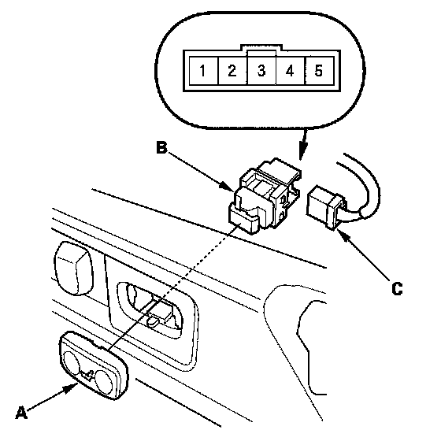
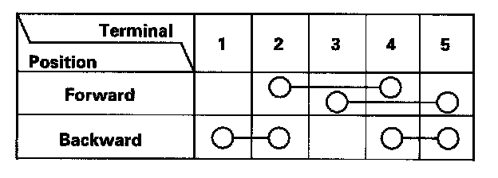

Power Lumbar Support Switch Test/Replacement
Power Lumbar SupportSwitch Test/Replacement

1. Separate the lumbar support switch cover (A) from the switch (B).
2. Disconnect the 5P connector (C) from the switch.

3. Check for continuity between the terminals in each switch position according to the table.
4. If the continuity is not as specified, replace the switch.